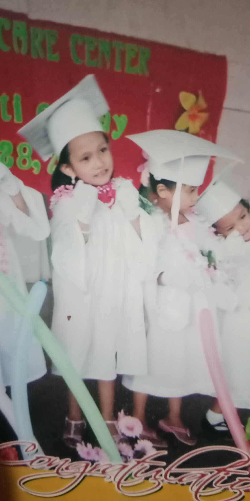
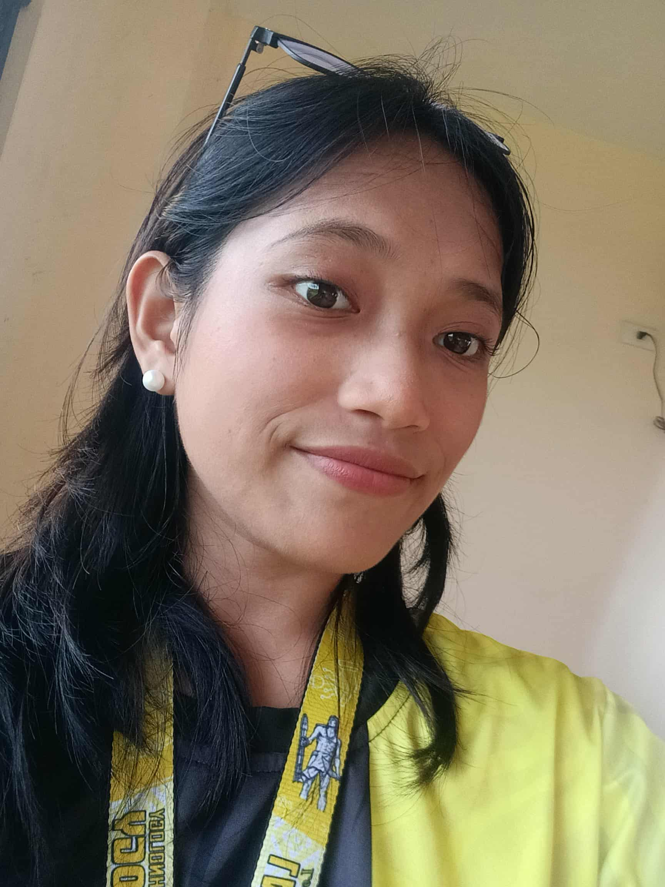

Early Childhood Memories
When I was little, I loved to draw, play, and explore. I remember spending my afternoons playing with my friends outside until the sunset. Life was simple — no worries, just laughter and curiosity. Those small moments taught me how to appreciate the little things and enjoy life’s simplicity.
School Experience Memories
Elementary School
My elementary life was simple yet full of memories. Back then, I was very shy — I didn’t like taking pictures or even being in one because I was scared and insecure. Pero bisan pa ana, I had five childhood best friends who made my school days so much fun. We always ate together during lunch or snack time and we were classmates from Grade 1 to 3. And those friends made me become a little confident and more friendly. I still remember the time nga nihilak gyud ko kay dili na mi classmates, so I begged Mama to transfer me to their section — and luckily, she agreed. That moment showed how much I valued friendship. Until now, we still talk sometimes, though not as often since we’re all busy with life. During my elementary years, I also joined many school activities like DBLC, where our school proudly became the champion! Every year, I joined different school activities. Pero pag Grade 5 to 6, niundang ko kay ni balik akong ka-shy ug insecurities. Still, those years were filled with fun — waking up early for the flag ceremony at 7 a.m., doing the same morning exercises with everyone, and joining school games. It was truly a unique and joyful time, very different from my other school journeys.
High School

Transitioning to high school felt like stepping into a new world. The school was a bit far from our house, and it was my first time riding a jeep or tricycle alone. Naay time nga tungod sa ka-shy nako, wala ko kaingon ug “para,” mao to nalapas ko sa among balay! Good thing someone else said “para,” so I got off and walked home — luckily, not too far. In this stage, I began to discover more about myself. It was during high school nga ni-evolve akong drawing skills — diri ko naka-realize nga kabalo diay ko mo-draw, though di pa kaayo master. I also met teachers who were very strict and gave us tons of projects, but they helped me become more disciplined and hardworking. Sadly, quarantine came and from Grade 8 to 10, we shifted to modular learning. It was challenging, but it also became a time of self-growth. When classes went back to face-to-face, I became more confident and made many new friends. My high school life taught me courage, creativity, and the beauty of stepping out of my comfort zone.
College
Now, here I am ‚Äî in my college chapter. This phase of my life feels both exciting and challenging. My confidence has improved a lot, and I‚Äôve learned to be more competitive, joining school events, games, and activities. College made me realize that success doesn‚Äôt rely only on notebooks or notes ‚Äî it‚Äôs all about your mindset, determination, and good health. Each day, I‚Äôm learning not just lessons from books but also lessons about life itself. I‚Äôm hopeful for my future ‚Äî manifesting that someday, I can become a cum laude. But beyond achievements, I keep my faith strong. I trust God‚Äôs timing and believe that everything happens according to His plan. üíñ